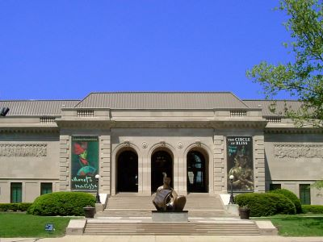
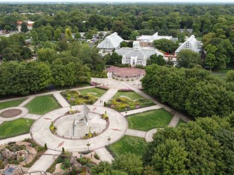
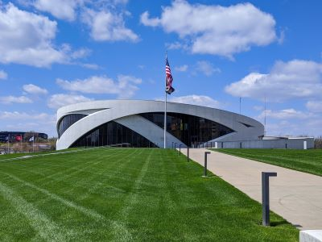
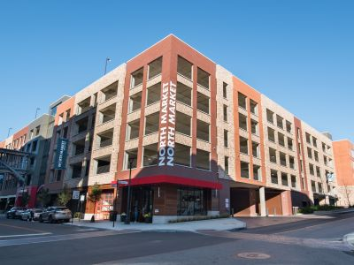
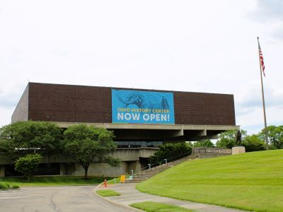
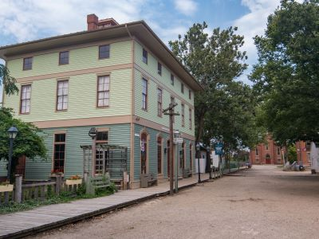
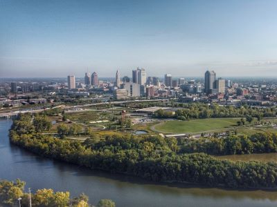
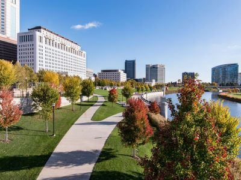
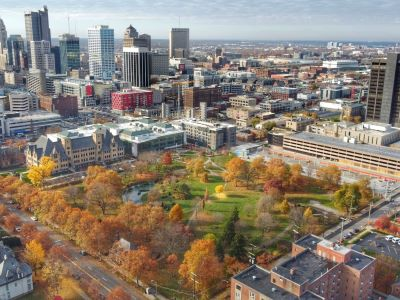

Columbus Travel Guide
Rapidly growing metropolitan center shaped by state government, higher education, and a diverse economy spanning technology, research, and cultural institutions.
Places to See in Columbus

Des Moines Guy, CC BY-SA 3.0, via Wikimedia Commons; Image Size Adjusted

Columbus Museum of Art
Museum featuring a diverse collection of American and European modern art, photography, and engaging interactive exhibits for all ages.

Danksergeant15, CC BY-SA 4.0, via Wikimedia Commons; Image Size Adjusted

Franklin Park Conservatory and Botanical Gardens
Indoor and outdoor gardens featuring exotic plant collections, seasonal exhibitions, and immersive educational experiences for visitors of all ages.

Danksergeant15, CC BY-SA 4.0, via Wikimedia Commons; Image Size Adjusted
Goodale Park
A historic urban park featuring expansive lawns, mature trees, walking paths, a scenic pond, public art, and year-round community gatherings in the heart of the city.

Danksergeant15, CC BY-SA 4.0, via Wikimedia Commons; Image Size Adjusted
National Veterans Memorial and Museum
Immersive museum experience honoring U.S. military veterans through personal stories, multimedia exhibits, and national service tributes.

Dsmspence, CC BY-SA 3.0, via Wikimedia Commons; Image Size Adjusted

North Market Downtown
Bustling indoor public market offering fresh produce, global cuisine, artisanal goods, and a vibrant community atmosphere.

Dsmspence, CC BY-SA 3.0, via Wikimedia Commons; Image Size Adjusted
Ohio History Center
Interactive museum and research facility showcasing Ohio’s natural history, cultural heritage, and historical artifacts through immersive exhibits and educational programs.
Dsmspence, CC BY-SA 3.0, via Wikimedia Commons; Image Size Adjusted
Ohio Statehouse
Historic government building offering guided tours, educational exhibits, and public access to legislative chambers and monuments.

Dsmspence, CC BY-SA 3.0, via Wikimedia Commons; Image Size Adjusted
Ohio Village
Living history museum recreating a late 19th-century Ohio town with costumed interpreters, period buildings, and immersive educational experiences.

Dsmspence, CC BY-SA 3.0, via Wikimedia Commons; Image Size Adjusted
Scioto Audubon Metro Park
Urban nature preserve offering trails, wetlands, climbing walls, and a dog park, all set against a reclaimed industrial landscape along the riverfront.

Dsmspence, CC BY-SA 3.0, via Wikimedia Commons; Image Size Adjusted
Scioto Mile Promenade
Riverfront walkway featuring shaded swings, gardens, fountains, and scenic overlooks connecting downtown Columbus to the Scioto River.

Dsmspence, CC BY-SA 3.0, via Wikimedia Commons; Image Size Adjusted
Topiary Park
Public garden featuring sculpted topiaries that recreate a famous painting, offering a unique blend of horticulture and fine art in a tranquil urban setting.
Overview
Columbus is the capital of Ohio and its largest city, as well as one of the fastest-growing cities in the Midwest. It is famous as the home of The Ohio State University and the Buckeyes, one of the largest universities in the country, and for its role as a state government, research, finance, and retail center. The city is the headquarters of companies such as Nationwide, Huntington Bank, and L Brands, and it is a major test market for new products and restaurants.
Visitors come to Columbus for its lively neighborhoods, such as the Short North Arts District, German Village, and Victorian Village, and for its restaurants, craft breweries, and ice cream. Other draws include the Ohio Statehouse, the Columbus Museum of Art, COSI, the Columbus Zoo and Aquarium, and Buckeyes football on fall Saturdays. Columbus is a young, affordable, and walkable city with a growing downtown and an active cultural calendar, including the Ohio State Fair and the Columbus Arts Festival.
History
The state legislature chose the site at the confluence of the Scioto and Olentangy Rivers for a new capital in 1812, and it was named for Christopher Columbus, replacing Chillicothe and Zanesville, which had served earlier as the capital. The city was laid out on a plan and became the capital in 1816, and its growth was helped by the National Road, the Ohio and Erie Canal feeder canal, and later the railroads. Ohio State University was founded as a land-grant college in 1870, and in the twentieth century Columbus diversified into insurance, banking, retail, and aviation, which helped it avoid the heavy industrial decline that struck other Ohio cities. Today it is a major regional hub with a diverse economy and a growing population. The Ohio History Center and Ohio Village explore the state's past.
Sightseeing and Popular Landmarks
The Ohio Statehouse is a Greek Revival building that is open for free tours, and the nearby Scioto Mile Promenade follows the river through downtown. The North Market has been a public market since 1876 and has many food vendors, and the National Veterans Memorial and Museum opened in 2018 on the riverfront. The Topiary Park has hedge sculptures that recreate Georges Seurat's painting A Sunday Afternoon on the Island of La Grande Jatte, and other popular areas include German Village's brick streets, the Short North's galleries, and Ohio Stadium, the "Horseshoe."
Culture and Museums
The Columbus Museum of Art has a strong collection of American and European modernism, and COSI is one of the top science museums in the country. The Ohio History Center has exhibits on the state's archaeology and history, and Ohio Village is a recreated nineteenth-century town. The Wexner Center for the Arts at Ohio State University shows contemporary art, film, and performance, and the Columbus Symphony, BalletMet, and the Ohio Theatre in the Broadway-style theater district provide year-round performances. The National Veterans Memorial and Museum is dedicated to the stories of American veterans.
Parks
Columbus has a large number of parks and a good network of trails. The Franklin Park Conservatory and Botanical Gardens has a Victorian glasshouse and Chihuly glass displays, while Goodale Park, the city's oldest park, is at the edge of the Short North. Scioto Audubon Metro Park has a climbing wall, a nature center, and riverside trails, and the Scioto Mile and Topiary Park provide downtown green space. Outside the city, the Columbus Zoo and Aquarium in Powell, Alum Creek, and the Metro Parks system offer hiking, boating, and wildlife viewing.
Sports
Columbus is home to two major league teams. The Columbus Blue Jackets of the NHL play at Nationwide Arena in the Arena District, and the Columbus Crew of Major League Soccer play at Lower.com Field, a downtown stadium that opened in 2021. The Crew were one of the original MLS teams and have won several MLS Cups, including in 2020 and 2023. Ohio State Buckeyes football at Ohio Stadium, with a capacity of more than 100,000, is the city's biggest sporting event.
Seasons and Weather
Columbus has a humid continental climate with four distinct seasons. Summers are warm and humid, with highs in the 80s°F, and winters are cold, with highs in the 30s°F and about 25 inches of snow per year on average. Spring and fall are the most pleasant seasons, with comfortable temperatures and colorful foliage in the fall. Thunderstorms are common in spring and summer, and weather can change quickly, so visitors should plan for layers and rain.
This article uses material from Wikipedia as well as information from official tourism and institutional sources. Key references include Experience Columbus, Ohio Statehouse, Columbus Museum of Art, Franklin Park Conservatory, Columbus and Franklin County Metro Parks, Columbus Blue Jackets, Columbus Crew, and the National Weather Service Wilmington, OH. Wikipedia material is from the articles "Columbus, Ohio" and "History of Columbus, Ohio", and is available under the Creative Commons Attribution-Share-Alike License 3.0.